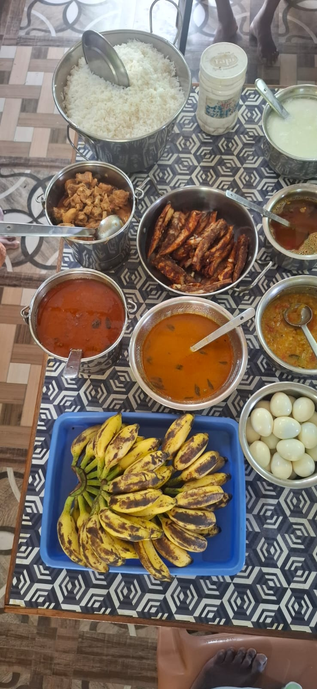
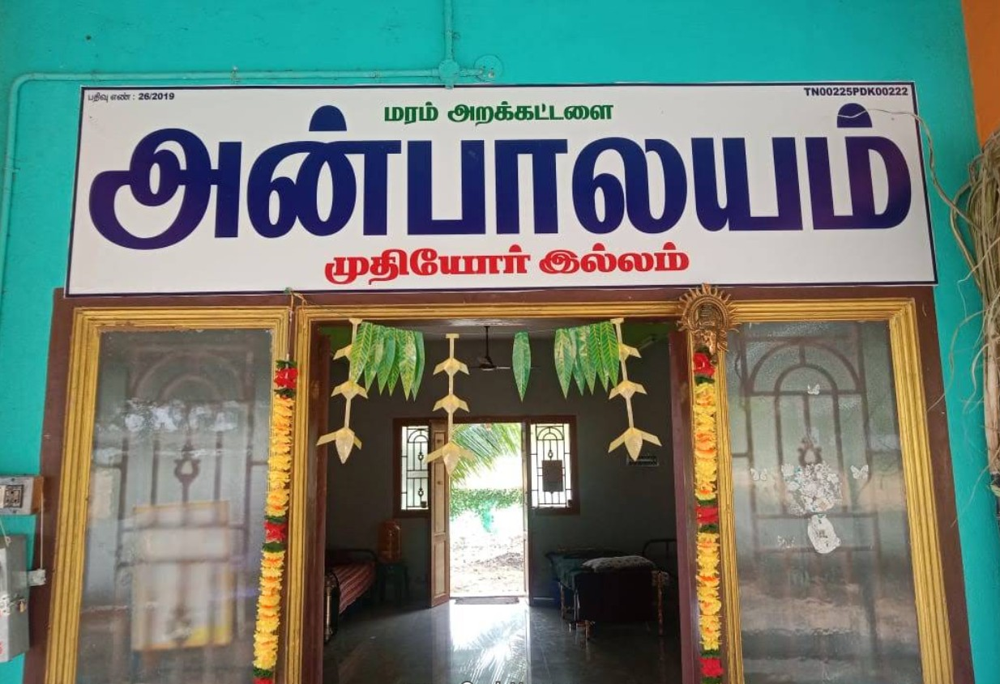

Care
Everyday support, companionship and a caring environment.
A home filled with love, care & dignity
அன்பாலயம்
More than a shelter. A place to belong.
Avudayarkoil · Pudukkottai District · Tamil Nadu
Welcome to Anbalayam
Anbalayam is an old age charity home in Avudayarkoil, Pudukkottai District. Founded and run by Mr. Maram Raja, the home is built around a simple belief: every elderly person deserves a safe, caring and respectful place to live.
Read our story →What matters to us
Everyday support, companionship and a caring environment.
Treating every elder with respect, patience and kindness.
Creating a warm community where people can feel at home.

The people behind Anbalayam
Under the care of Mr. Maram Raja, Anbalayam serves as a place where elders can share everyday life, meals, conversations and moments of happiness together.
See our galleryMake a difference
Help Anbalayam continue providing care, food and a welcoming home for elderly people.
Find us
10/154 A, Punniam Vayal,
Kulathukudiyiruppu Road,
Avudayarkoil (Post),
Pudukkottai District, Tamil Nadu.
